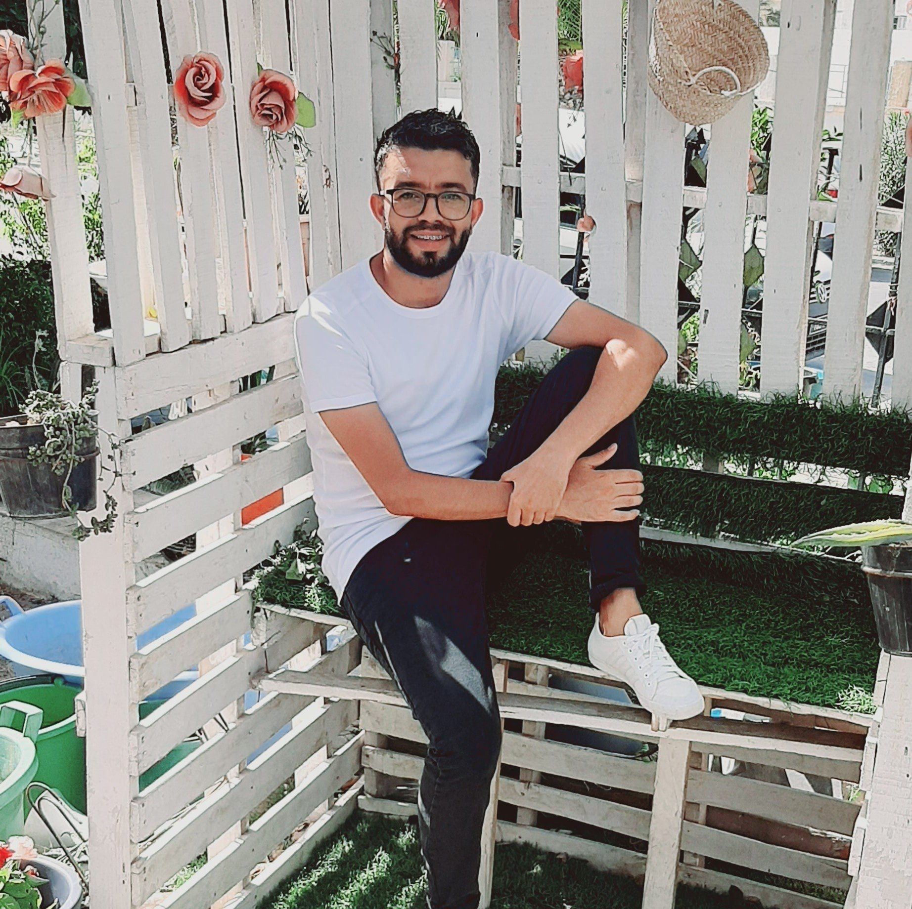
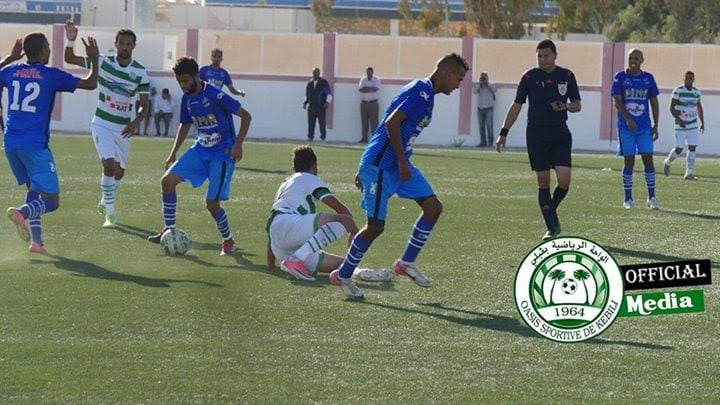
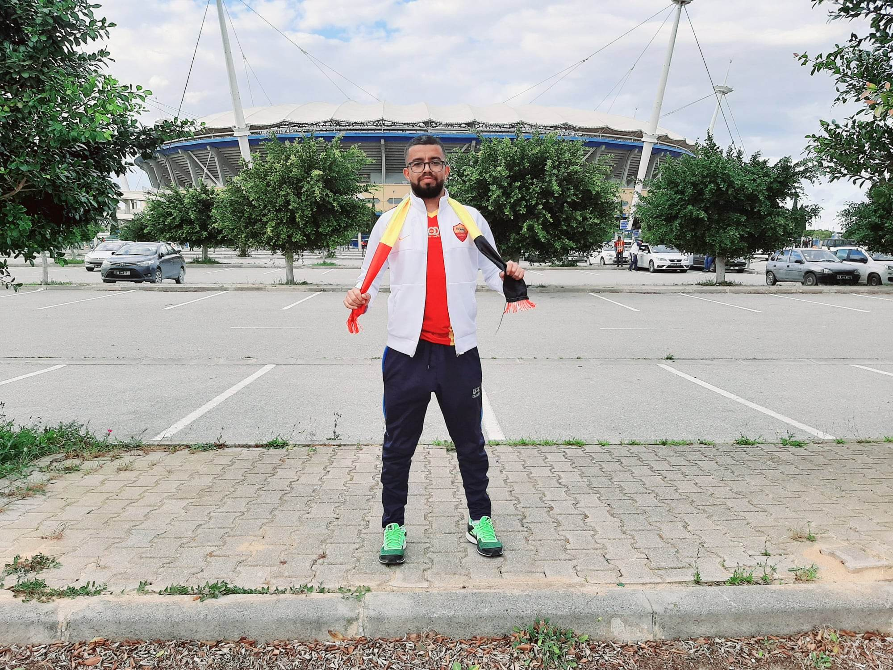
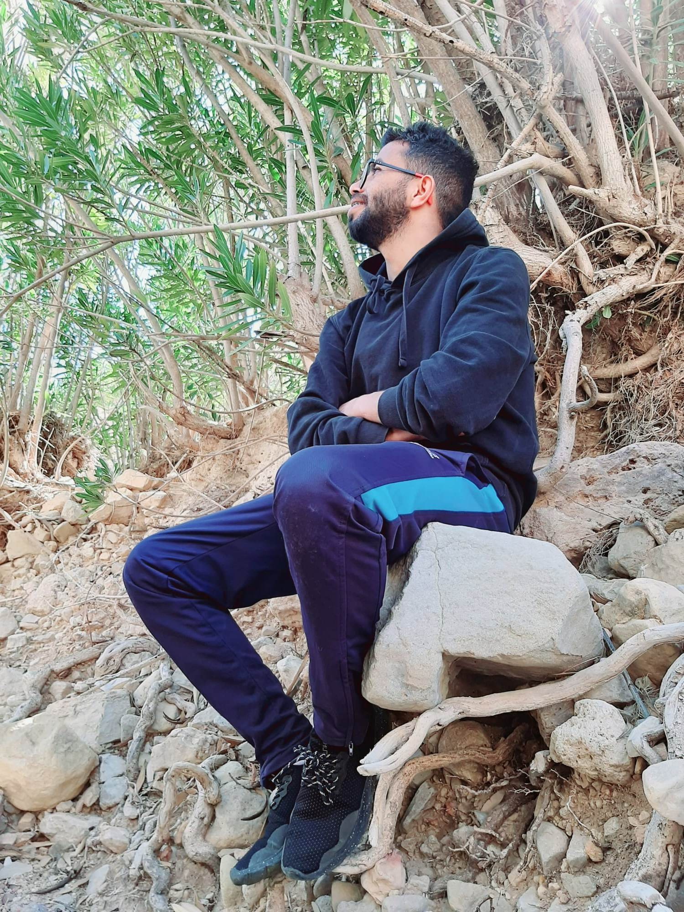
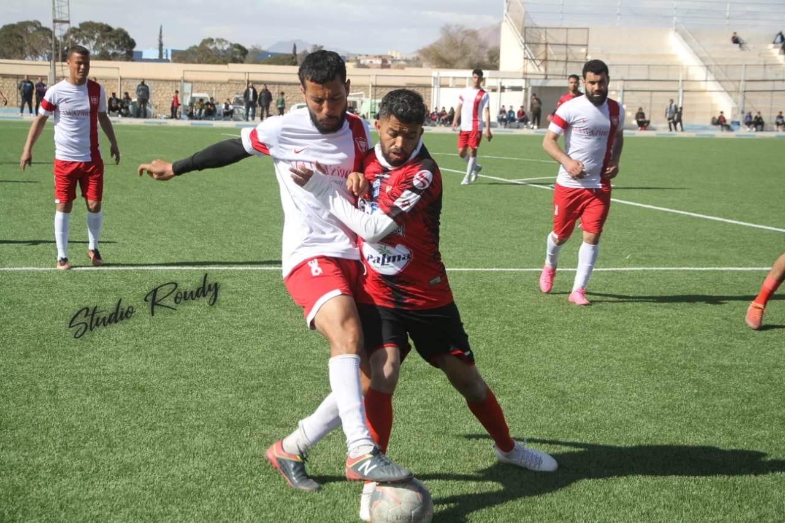
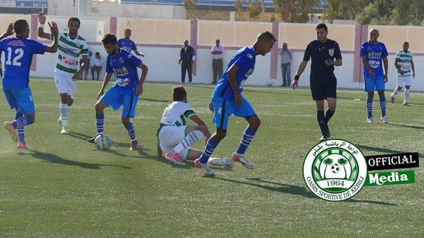
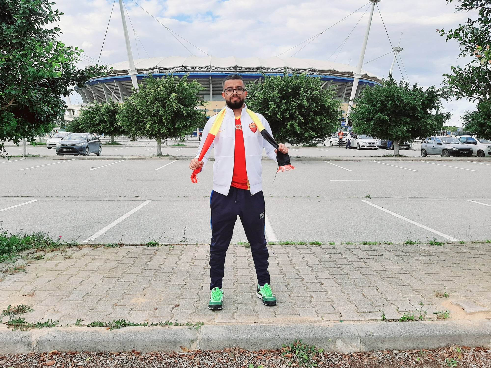
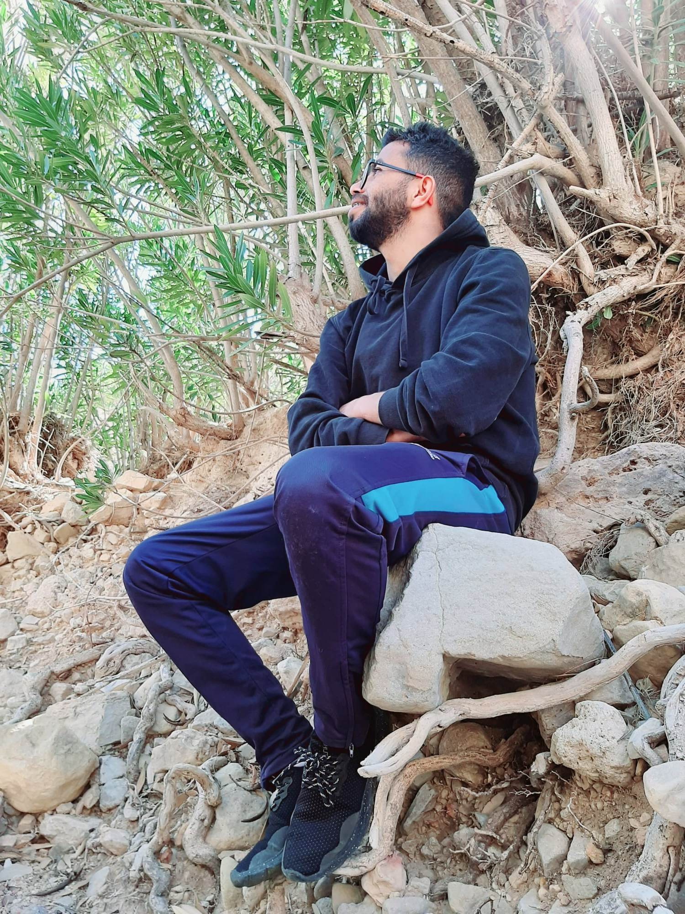
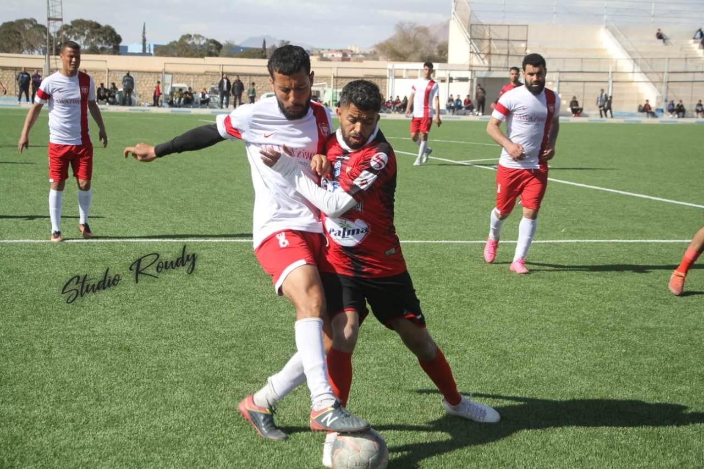

Home :

je suis Amine Smida né le 01 Mars 1990 à Sidi Aich -Gafsa.je suis diplomé en 2014 en physique générale de la faculté de sciences de Gafsa,après avoir commencer mes études superieures en IPEIG.
Dans le plan personnel,j'étais un joueur de Football pendant plusieurs saisons.J'ai joué pour le Stade Gafsien,L'Avenir sport de Lala et le Croissant Sportif Chebbien...
Maintenant,je suis en cours de suivre la formation Développement Web pour objectif de renforcer mais connaissances dans ce domaine et pourquoi pas
faire une reconversion du carrière.
Career :
| Année | Evenement |
|---|---|
| 2009 | diplome du baccalauréat |
| 2010 | IPEIG Gafsa |
| 2012 | faculté des sciences Gfasa |
| 2014 | Diplome en physique Générale |
| 2018 | Formation en électricité des batiments |
| 2023 | formation en developpement web |
Activities :
 







About
Favourite Youtuber
Ahmad al ghandour
Al-Ghandour a créé sa chaîne "Al-Dahih" sur YouTube en 2014 et a commencé à publier des vidéos centrées sur la simplification de la science de manière simple avec un peu de comédie.
La renommée d'Al-Ghandour a augmenté en Égypte et dans de nombreux pays arabophones après son contrat avec Al- Jazeera Plus en 2017, et cela s'est poursuivi jusqu'au 9 juin 2020, pour mettre fin au contrat selon la volonté du réseau.En octobre 2020, les premiers épisodes de son nouveau programme, Mathaf Al-Duhaih , une émission de comédie culturelle , ont été diffusés sur Shahid.net Puis, en 2021, il présente le programme Al-Duhaih sur la chaîne New Media Academy, avant de passer à le présenter sur la chaîne Mathaf future .